Solution
Après le premier coloriage, les deux cases de la moitié droite sont coloriées en vert. Pour obtenir l'objectif après la deuxième étape de coloriage, il faut que la règle de coloriage pour une case verte corresponde au motif répété deux fois sur la moitié droite de l'objectif. Fixons donc déjà la règle de coloriage suivante :
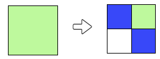On obtient alors la première moitié du résultat :
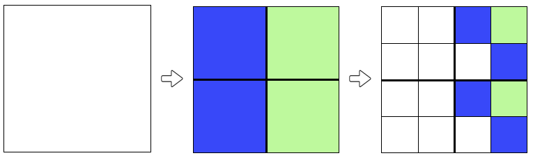De la même manière, on peut définir la règle de coloriage d'une case bleue, en recopiant le motif répété deux fois sur la moitié gauche de l'objectif.
En résumé, on obtient le résultat souhaité avec les règles suivantes :
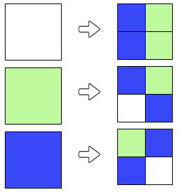Lors de la première étape, on colorie un carré blanc en 4 carrés verts ou bleus. Pour choisir la couleur des cases, il faut prendre en compte les motifs visibles dans l'objectif : le quart en haut à gauche est identique au quart en bas à droite, et de même le quart en haut à droite est identique au quart en bas à gauche. Il faut refléter ces symétries dans la règle de coloriage pour un carré blanc, par exemple comme cela :
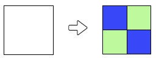On obtient alors :
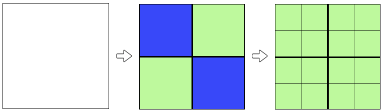Il reste à déterminer les règles pour la seconde étape de coloriage. La règle du coloriage pour les cases vertes doit permettre d'obtenir le motif apparaissant dans le quart en haut à droite et le quart en bas à gauche de l'objectif.
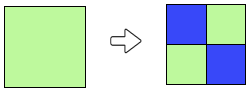On obtient alors :
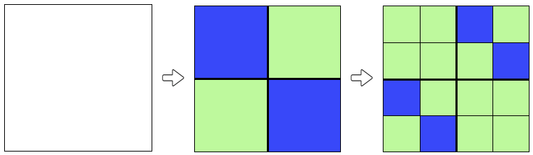La règle du coloriage pour les cases bleues doit permettre d'obtenir le motif apparaissant dans les deux autres quarts de l'objectif.
En résumé, on peut obtenir l'objectif avec les règles suivantes :
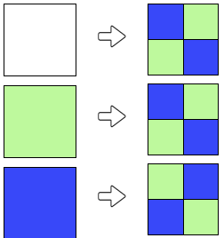Notez que l'on peut aussi réussir en inversant les couleurs à la première étape; voici l'autre solution :
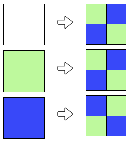Observez les motifs formés par tous les carrés de 4 cases qui apparaissent dans l'objectif.
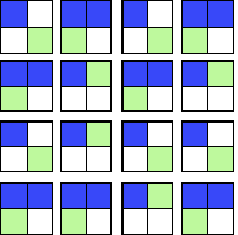On voit qu'il y a 3 types de motifs différents :
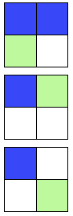Il va forcément falloir utiliser ces motifs comme règles de coloriage. Reste à savoir laquelle va correspondre à chaque couleur.
Pour trouver le motif qui correspond à la règle de coloriage pour le blanc, on découpe l'objectif en 4 carrés (de 16 cases chacun) :

On peut alors observer que les deux carrés du haut sont identiques, tandis que les deux carrés du bas présentent tous deux des motifs différents.
On en déduit que la règle de coloriage du blanc est, parmi les 3 motifs repérés plus haut, celui qui a les deux cases du haut de la même couleur.
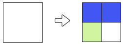Une fois que l'on a trouvé la première étape, il reste à utiliser les deux autres motifs repérés comme règles de coloriage pour le vert et pour le bleu. Il n'y a que deux possibilités, que l'on peut tester très rapidement (ou bien sinon on peut réfléchir, mais ça demande ici davantage de temps !).
En résumé, la solution est :
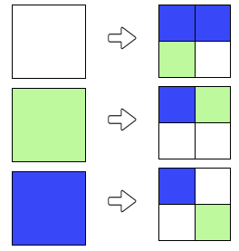